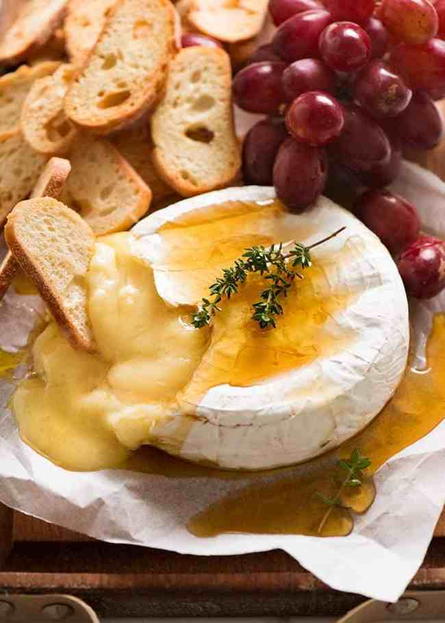

Baked Brie

Description
Ingredients
- 250 - 500g / 8 - 16 oz round brie or camembert
- 2 tbsp honey or maple syrup (optional)
- 1 thyme sprig (optional)
For Serving
- Crostini or other sturdy crackers
- 1 bunch purple grapes (or green, optional)
Steps
- Preheat oven to 180°C/350°F (all oven types).
- Unwrap brie and place in a small, shallow ovenproof dish slightly larger than the brie (to be used for
serving) OR a piece of crumbled baking / parchment paper.
- Bake for 15 to 20 minutes (for 250g/80z), or until melted through. For 500g/1lb brie, increase to 25
minutes. To check, gently touch the centre of the brie - it should feel very soft, like it is about to
collapse if you press any harder.
- Carefully transfer to serving plate / board - it's delicate (transfer on paper if you used paper).
- Drizzle with honey, top with sprig of thyme (if using).
- Serve immediately with crostini on the side for scooping. Provide a knife to cut through the rind and a
cheese or pate knife (or similar) to scoop cheese up onto crostini or crackers (plain or fruit/nut
flavoured).